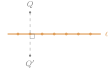
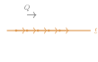

Aufgabe 3.5
Welcher Unterschied besteht zwischen einer Fixpunktgeraden und einer «Fixgeraden»?
Womit anfangen? Lesen Sie die beiden Wörter genau: In einem steckt «Punkt», im anderen nicht.
- Was bedeutet es, wenn jeder Punkt einer Geraden fest bleibt?
- Was bedeutet es, wenn nur die Gerade als Ganzes erhalten bleibt?
- Können sich Punkte auf einer Fixgeraden bewegen — und wohin?

Eine Gerade, auf der jeder einzelne Punkt ein Fixpunkt ist: $f(P) = P$ für alle $P$ auf der Geraden. Im Bild liegt kein Punkt von $a$ anders als vorher; nur $Q$ daneben wandert nach $Q'$.
Beispiel: die Spiegelachse bei einer Achsenspiegelung.
Metaphorisch: wie ein fest verankertes Seil — nichts bewegt sich.

Eine Gerade, die als Ganzes auf sich abgebildet wird: $f(g) = g$, aber möglicherweise $f(P) \neq P$. Im Bild bleibt $g$, wo sie ist — jeder Punkt auf ihr rutscht jedoch ein Stück weiter.
Beispiel: bei einer Verschiebung jede Gerade parallel zum Verschiebungsvektor.
Metaphorisch: wie eine Perlenkette — die Kette bleibt, aber die Perlen können rutschen.
Im Video: Etappe 6 · Die Taxonomie bei 9:00